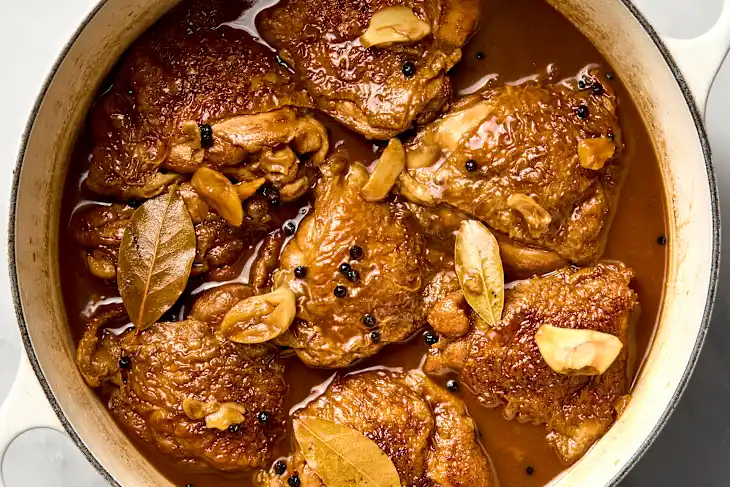

Filipino Chicken Adobo Recipe
Chicken Adobo is one of those dishes that instantly feels like home.
Often called the unofficial national dish of the Philippines, it’s beloved for its rich, comforting flavors and the way it
brings people together around the table. Each family has its own take on it, some prefer it saucy, others let it simmer until
the flavors caramelize, but no matter the version, adobo always carries a taste of tradition and warmth.
It’s simple, hearty, and deeply satisfying, making it a dish that’s been passed down through generations. Whether served on an
ordinary day or at a family gathering, Chicken Adobo has a way of turning an everyday meal into something special.

Ingredients
- 2 lbs chicken
- 3 pieces dried bay leaves
- 4 tablespoons soy sauce
- 6 tablespoons white vinegar
- 5 cloves garlic
- 1 1/2 cups water
- 3 tablespoons cooking oil
- 1 teaspoon sugar
- 1/4 teaspoon salt
- 1 teaspoon whole peppercorn
How To Cook
- Put the chicken in a large bowl and mix it with soy sauce and garlic until well coated.
Let it marinate for at least 1 hour. Note: the longer the time, the better
- Heat some oil in a pot over medium heat. Once hot, pan-fry the chicken for about 2 minutes on each side to lock in the flavor.
- Pour in the leftover marinade along with the garlic, then add water. Bring it to a gentle boil.
- Add the bay leaves and peppercorns, then lower the heat and let everything simmer for about 30 minutes, or until the chicken is nice and tender.
- Add vinegar. Stir and cook for 10 minutes.
- Put-in the sugar and salt. Mix well, turn off the heat, and your Chicken Adobo is ready to serve. Best enjoyed hot with rice!
Tips & Tricks
- Any chicken cut can be used for Filipino chicken adobo, though thighs, drumsticks, and breasts are the most common choices.
- The key to great adobo lies in the marinade! The longer the chicken soaks, the deeper the flavor.
Some cooks even prepare large batches and freeze them, allowing the chicken to absorb more taste over time.
- Dark soy sauce is traditionally used, but light soy sauce or even coconut aminos can be good alternatives.
- White vinegar is the standard, though cane or apple cider vinegar also works well.
- Garlic is essential to adobo’s flavor, while onions may be added if sautéed after pan-frying the chicken.
- For extra tenderness, the chicken can also be prepared in a slow cooker or crockpot overnight, resulting in juicier meat and richer flavor.